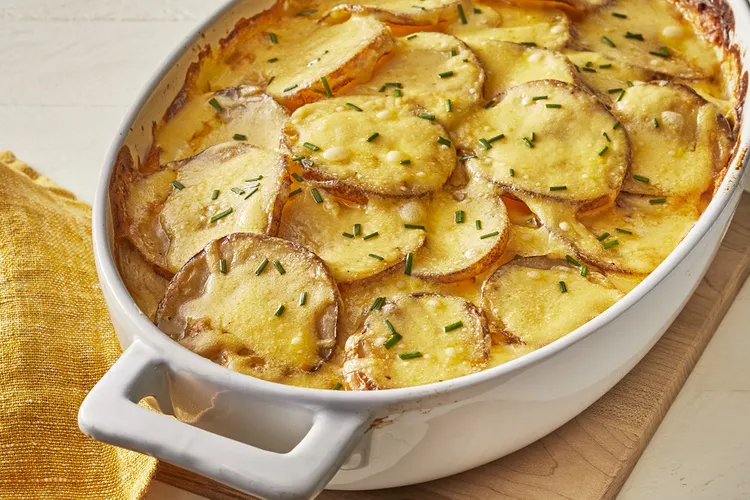

Creamy au Gratin Potatoes

Description
There's nothing like au gratin potatoes to take any meal over the top. The creamy, decadent, and oh-so satisfying recipe is sure to please everyone at your table.
This crowd pleaser of a dish will require few ingredients, and many of which should already be found in your kitchen cubbards!
Ingredients
- Potatoes: This recipe starts with thinly sliced Russet potatoes. You can substitute with Yukon gold, if need be.
- Onion: Slice one onion into rings to shingle in unison with the potatoes.
- Seasonings: These creamy au gratin potatoes require very simple seasoning, and all that is required is salt and pepperto bring out the flavors.
- Butter, Roux, and Flour: Combine these in order to create the cheese sauce needed.
- Milk: Slowly introduce and whisk in milk to create a very creamy consistency.
- Cheese: Of course you need some cheddar for this cheesy dish!
Steps
- The Shingling: Begin laying half of the potatoes in the bottom of the prepared baking dish. Season on top, and layer your onion slices over top. Next you want to finish laying the rest of your potatoes on top, and finish with more seasoning.
- Let it Cheese: Melt butter in a saucepan. Gradually introduce flour and whisk it in along with salt and cook for one minute. Next, slowly introduce milk into the whisk. Cook while whisking constantly until the mixture has thickened, and finally stir in the cheese.
- Waiting Game: Finally comes the test of your patience, in which you finish the casserole by pouring your newly made sauce over the potatoes, and cover the dish with foil. Bake in preheated oven until the potatoes are tender and the sauce begins to bubble.